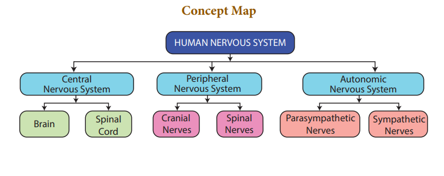

TEXTBOOK EVALUATION
1 Choose the correct answer
- Bipolar neurons are found in
- Retina of eye
- cerebral cortex
- embryo
- respiratory epithelium
- Site for processing of vision, hearing, memory, speech, intelligence and thought is
- Kidney
- Ear
- Brain
- Lungs
- In reflex action, the reflex arc is formed by
- brain, spinal cord, muscle
- receptor, muscle, spinal cord
- muscle, receptor, brain
- receptor, spinal cord, muscle
- Dendrites transmit impulse dash cell body and axon transmit impulse dash cell body.
- away from, away from
- towards, away from
- towards, towards
- away from, towards
- The outer most of the three cranial meninges is
- arachnoid membrane
- piamater
- durometer
- myelin sheath
- There are dash pairs of cranial nerves and dash pairs of spinal nerves.
- 12, 31
- 31, 12
- 12, 13
- 12, 21
- The neurons which carry impulse from the central nervous system to the muscle fibre.
- afferent neurons
- association neuron
- efferent neuron
- unipolar neuron
- Which nervous band connects the two cerebral hemispheres of brain?
- Thalamus
- Hypothalamus
- corpus callosum
- pons
- Node of Ranvier is found in
- Muscles
- Axons
- Dendrites
- Cyton
- Vomiting centre is located in
- medulla oblongata
- stomach
- cerebrum
- hypothalamus
- Nerve cells do not possess
- Neurilemma
- Sarcolemma
- Axon
- Dendrites
- A person who met with an accident lost control of body temperature, water balance, and hunger. Which of the following part of brain is supposed to be damaged?
- Medulla oblongata
- Cerebrum
- Pons
- hypothalamus
2 Fill in the blanks
- Dash is the longest cell in our body.
- Impulses travels rapidly in dash neurons.
- A change in the environment that causes an animal to react is called dash.
- Dash carries the impulse towards the cell body.
- The two antagonistic components of autonomic nervous system are dash and dash.
- A neuron contains all cell organelles except dash.
- Dash maintains the constant pressure inside the cranium.
- Dash and dash increase the surface area of cerebrum.
- The part of human brain which acts as relay center is dash
3 State whether true or false, if false write the correct statement
- Dendrons are the longest fibres that conducts impulses away from the cell body.
- Sympathetic nervous system is a part of central nervous system.
- Hypothalamus is the thermoregulatory centre of human body.
- Cerebrum controls the voluntary actions of our body.
- In the central nervous system myelinated fibres form the white matter.
- All the nerves in the body are covered and protected by meninges.
- Cerebrospinal fluid provides nutrition to brain.
- Reflex arc allows the rapid response of the body to a stimulus.
- Pons helps in regulating respiration.
4 Match the following
Column 1 |
Column II |
A. Nissl’s granules |
Forebrain |
B. Hypothalamus |
Peripheral Nervous system |
C. Cerebellum |
Cyton |
D. Schwann cell |
Hindbrain |
5.Understand the assertion statement. Justify the reason given and choose the correct choice
a). Assertion is correct, and reason is wrong
b). Reason is correct, and the assertion is wrong
c). Both assertion and reason are correct
d). Both assertion and reason are wrong
1
Assertion: Cerebrospinal fluid is present throughout the central nervous system.
Reason: Cerebrospinal fluid has no such functions.
2
Assertion: Corpus callosum is present in space between the durometer and piamater.
Reason: It serves to maintain the constant intracranial pressure.
6 Short answer questions
- Define stimulus.
- Name the parts of the hind brain.
- What are the structures involved in the protection of brain?
- Give an example for conditioned reflexes.
- Which acts as a link between the nervous system and endocrine system?
- Define reflex arc.
7 Differentiate between
- Voluntary and involuntary actions.
- Medullated and non-medullated nerve fibre.
8 Long answer questions
- With a neat labelled diagram explain the structure of a neuron.
- Illustrate the structure and functions of brain.
- What will you do if someone pricks your hand with a needle? Elucidate the pathway of response with a neat labelled diagram.
- Describe the structure of spinal cord.
- How are nerve impulses transferred from one neuron to next neuron?
- Classify neurons based on its structure
- Higher Order Thinking Skills (HOTS)
1 (‘A’) is a cylindrical structure that begins from the lower end of medulla and extend downwards. It is enclosed in bony cage ‘B’ and covered by membranes ‘C’. As many as ‘D’ pairs of nerves arise from the structure (‘A’).
(i) What is A?
(ii) Name (a) bony cage ‘B’ and (b) membranes ‘C’
(iii) How much is D?
- Our body contains a large number of cells ‘L’ which are the longest cells in the body. L has long and short branch called as ‘M’ and ‘N’ respectively. There is a gap (‘O’) between two ‘L’ cells, through which nerve impulse transfer by release of chemical substance ‘P’.
(iv) Name the cells L
(v) What are M and N?
(vi) What is the gap O?
(vii) Name the chemical substance P
REFERENCE BOOKS
1. Guyton and Hall, 2003, Textbook of Medical Physiology; Harcourt Indian Private Limited.
2. Sherwood. L., 2007, Human Physiology: From cells to systems 6th Edition, Indian edition, Thomson Brooks/Cole.
3. Singh, H.D., 2007, Handbook of Basic Human Physiology for Paramedical Students. S. Chand and Company Ltd. New Delhi.
INTERNET RESOURCES
1. http://www.britannica.com/science/ nervous-system
2. http://www.sumanasine.com/webcontent/ animations/neurobiology.html
